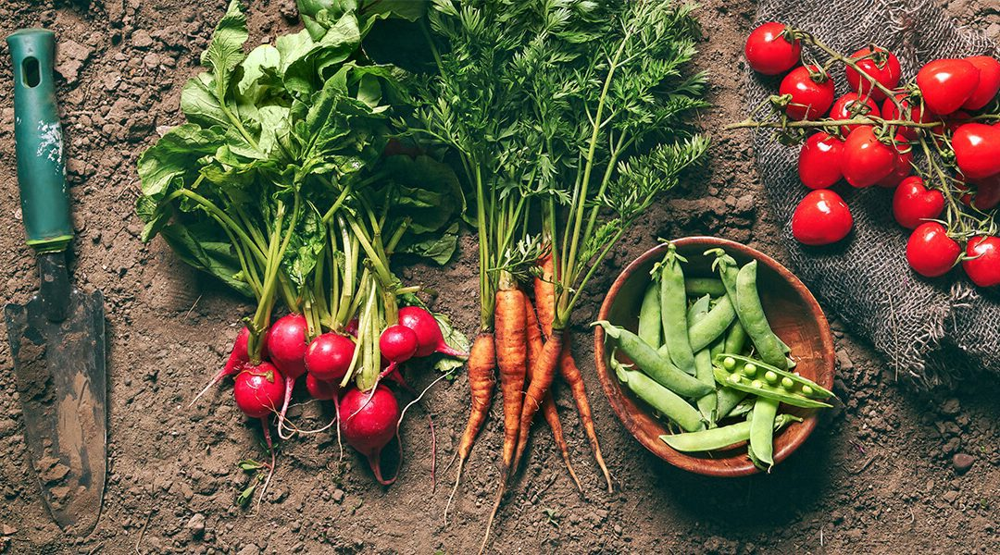

Gardening Tips
Want to start digging but don't know where to begin? Use this beginner's guide to gardening for the answers to your gardening questions. Keep reading for all of the basic gardening tips and tricks you'll need to get started.
-
Light: Most veggies, especially those that bear fruit (tomatoes, cucumbers, squash, and peppers, for example) need sun, and a lot of it. Ideally, you want a site with at least 8 hours of direct sun per day. In less light, you can still grow some edibles; mainly leafy crops and herbs.
-
Soil: Healthy, rich soil is the key to a successful and productive vegetable garden, so don’t skip this step! A soil test will give you an idea of your existing soil fertility and pH, and offer suggestions of what types of fertilizers or amendments will get your plot up to par. In my own garden, I rely on homemade compost, organic well-composted animal manures, and organic fertilizers like kelp meal and alfalfa meal.
-
Size: A vegetable garden can be low-maintenance, but it’s not no-maintenance. Therefore, do yourself a favor and stick to a small plot for the first year or two. A 4 by 8 foot bed is ideal for a starter veggie garden and will give you enough space to grow a handful of crops (see the next point). If you wish to start even smaller, try planting container-friendly veggies and herbs in pots or window-boxes on a sunny deck.
-

Plants: With your first veggie garden, it’s very tempting to want to grow everything! But, for your own sake, I’d suggest you pick 4 to 5 types of vegetables and grow them well. Trying to cram too much in a compact space is asking for trouble and you’ll end up with a smaller, not larger harvest. However, you can boost yield by succession planting. When your initial crops have been harvested, follow up with a second sowing. For example, follow spring lettuce with summer beans. Succession planting allows you to stretch your harvest season for the longest possible time.
-
Bugs: Ok, this might be hard to believe, but most bugs are your friends! Yup, it’s true. Think bees, butterflies, tachinid flies, ladybugs and more! To attract these good guys to your garden – and boost crop pollination – include clumps of insect-friendly plants like sweet alyssum, zinnias, cosmos, and sunflowers between the veggies and herbs.
-
Water, weed & feed: This might seem to be one of the most obvious vegetable gardening tips, but new veggie gardeners may not know when or how much to water. Newly seeded beds will need frequent watering, but most established crops can get by on one to two inches of water per week. To conserve water and reduce the need to irrigate, mulch your soil with several inches of straw or shredded leaves.
Side benefit: the mulch will also suppress weeds! As for feeding, quick growing crops like radishes and lettuce won’t need supplemental fertilizers if grown in in fertile soil. Long-term veggies like tomatoes, winter squash, and eggplants, however, will appreciate a boost several times over the growing season. Give them an occasional dose of a water soluble organic food to support growth and encourage the biggest harvest.